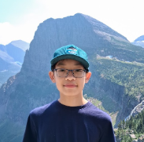

Tianmu Sha
Team Captain
Hi, my name is Tianmu Sha, and I am the captain and founder of Celeris Robotics. I am a rising freshman of West Windsor-Plainsboro High School South, and I enjoy STEM topics like Math, Engineering, Computer Science, and Physics. Outside of STEM, I like playing piano, violin, and tennis. In addition, I have made fun projects like a small web browser based multiplayer video game, a treasure chest out of wood, and a motorized nerf dart flywheel shooter out of lego!
Every meeting I try to learn something new and grow as a person, whether it’s a interesting coding algorithm, innovative design contraption, or just how to be a better captain! I am excited to compete this year and I hope to bring innovation, creativity, and collaboration to this robotics team.